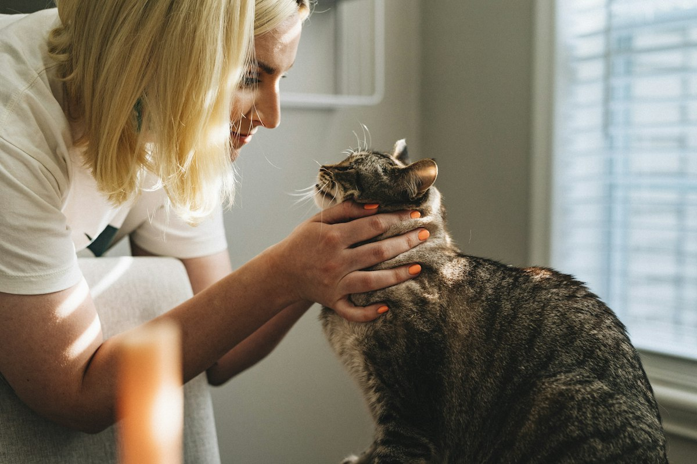

Transferencia
Donación directa por IBAN
Ideal para una aportación puntual que ayuda a gastos veterinarios, alimentación y cuidados.

IBANES90 3035 0152 1115 2004 9724
1
Abre tu banco
Entra en tu app o banca online y elige “hacer transferencia”.
2
Pega el IBAN
Copia el número de cuenta de Grupo Nebak y revisa que sea correcto.
3
Envía tu aporte
Indica el importe. En concepto puedes poner “Donación Nebak”.